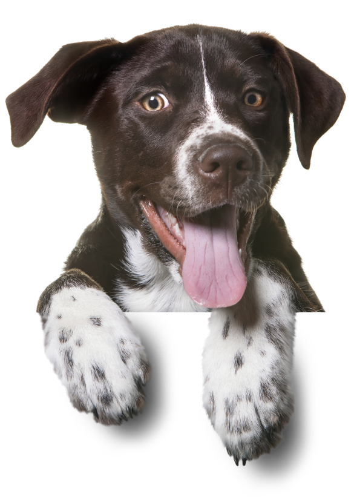
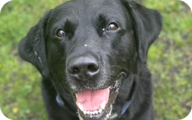
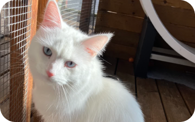
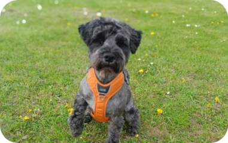
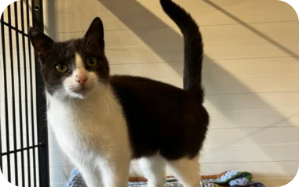
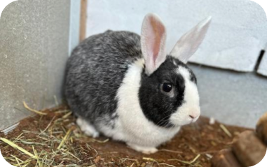
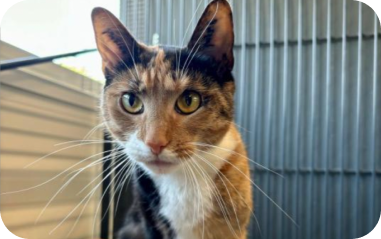
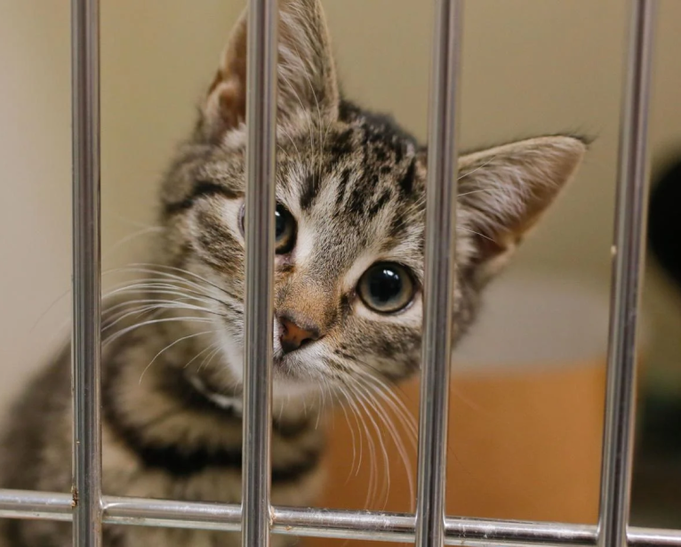
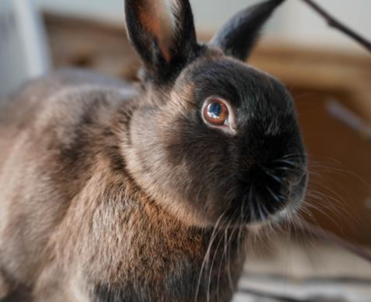

Dyrenes Beskyttelse Aarhus
Dyrene har brug for gode hjem!
Gå ind og find en der passer til dig!
2024 I TAL
8.498
Fandt hjem
i Aarhus
SNEAK PEAK AF DYR
◀
HERMAN
3 ÅR
2 DAGE PÅ INTERNAT
"Jeg er en god hund med krudt i rumpetten."

MALOU
2 ÅR
6 DAGE PÅ INTERNAT
“Jeg er en sød hund, og en
rigtig hyggetrold.”

LOUIE
3 ÅR
8 DAGE PÅ INTERNAT
“Jeg er en kat, der godt
kan lide selvskab.”

CHAPLIN
2 ÅR
8 DAGE PÅ INTERNAT
“Jeg er glad for at gå ture,
især i parken.”

BLUEY
5 MDR
10 DAGE PÅ INTERNAT
“Jeg er en kat, der elsker
leg og masser af plads.”

FUTTE
6 MDR
2 DAGE PÅ INTERNAT
“Jeg er en kanin, der elsker
at blive nusset om.”
ZIGGE
1 ÅR 3 MDR
11 DAGE PÅ INTERNAT
“Jeg er en jagthund, som
kommer fra
god plads.”

DINA
7 ÅR 10 MDR
2 DAGE PÅ INTERNAT
“Jeg er en ung kat, der er
klar på at lege.”
▶

VI HJÆLPER DYR I NØD, STOPPER OVERGREB MOD DYR OG KÆMPER FOR ET RESPEKTFULDT OG BÆREDYGTIGT FORHOLD MELLEM DYR, MENNESKER OG NATUR.
VORES MISSION

